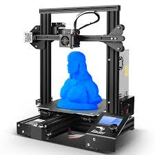

3D printing, also known as additive manufacturing, is a groundbreaking technology that constructs objects layer by layer from digital models.
Unlike traditional subtractive manufacturing, which removes material to create a part, 3D printing adds material only where needed, reducing waste and enabling complex geometries that are otherwise impossible to achieve. The process begins with a digital design, typically created using computer-aided design (CAD) software. This digital model is then sliced into thin horizontal layers, which the 3D printer uses as a blueprint to deposit material, typically plastic, resin, metal, or even biological substances.
There are various 3D printing techniques, including Fused Deposition Modeling (FDM), Stereolithography (SLA), and Selective Laser Sintering (SLS), each suited for different applications and materials. From rapid prototyping and custom medical implants to fashion and culinary arts, 3D printing is transforming industries by offering unprecedented flexibility, customization, and efficiency. It has democratized manufacturing, allowing anyone with a 3D printer to turn their ideas into tangible objects, fostering innovation and creativity across the globe.

Ex.1 - In use 3D Printer